Procedimiento según solicitud del analista de pruebas:
A) Una cuenta de usuario TSO Mainframe.
B) Un archivo tipo txt.
C) Finalizados los puntos A y B procesar cmcinsu, en el servidor SRVFT51.
D) El cmcinsu, genera 3 archivos, deben anexarse a la solicitud del analista de pruebas, fin del proceso.
A) Una cuenta de usuario TSO Mainframe.
A.1) Al ingresar en Control/M, seleccionar: opción 2 JOB SCHEDULE DEF, tabla INSUMOS y luego el JOB HSPINV02
le mostrará la planificación del job, por favor en el campo SET VAR, colocar despues del simbolo = el usuario que indica el Analista de pruebas en la solicitud, vea el siguiente modelo:
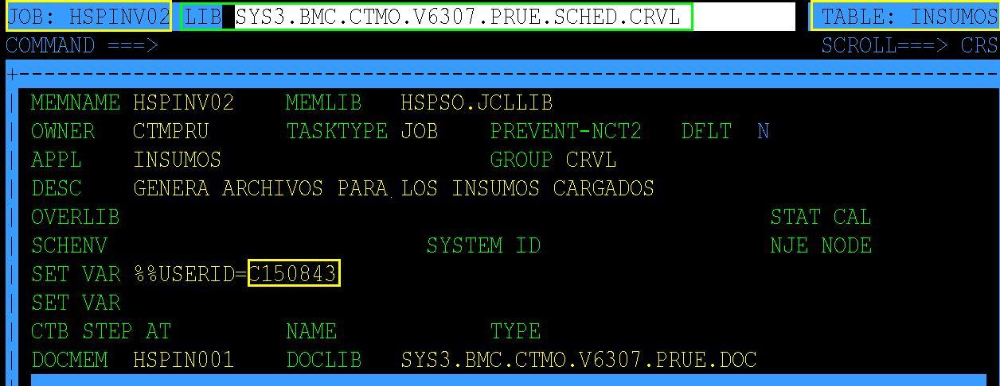
A.2) Salve el cambio realizado y force el job con fecha del día, vaya a la opción 3 ACTIVE ENV. y agrege la condición HSPINV02_INICIO_OKAl, al finalizar la ejecución del job, vaya al Spool y verifique la salidas del proceso, este dejará en el SRVFT25 un archivo:BsF_TODO_CDM_C128826_20140812_132432.TXT ruta /appl/cdmd01/billing04/NEHOMBFData/OUT/
Utilizando el CORE FTP, veremos la ubicación del archivo
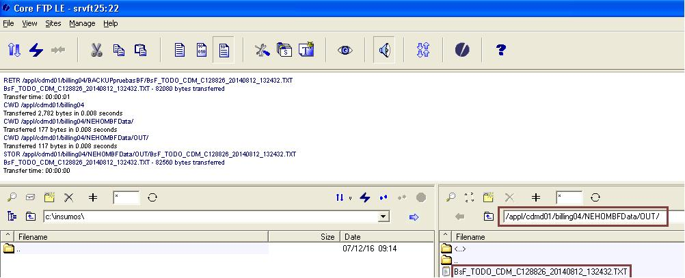 A.3) En Internet Explorer dirijase a la siguiente dirección, https://srvft25.cantv.com.ve/DM/Launch.jsp,
llene los campos como se muestra en la siguiente gráfica:
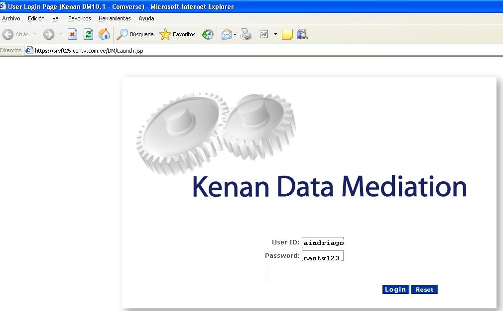
A.4) Seleccionar Sources
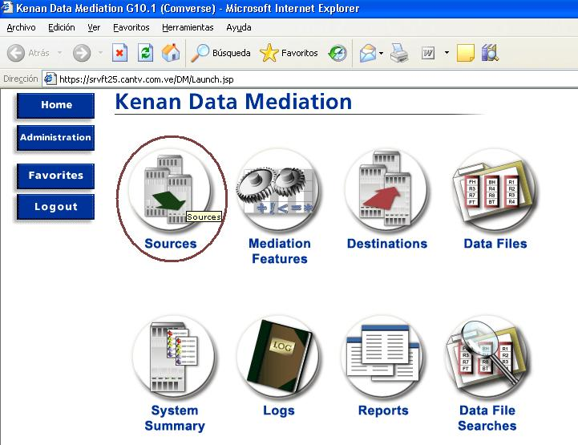
A.5) En el campo Sources según el analista de prueba puede solicitar 2 casos 1. NEMOMBH 2. NECANBF,
en el ejemplo que acontinuación se describe utilizaremos NEMOMBF, los pasos siguientes las selecciones son identicas:
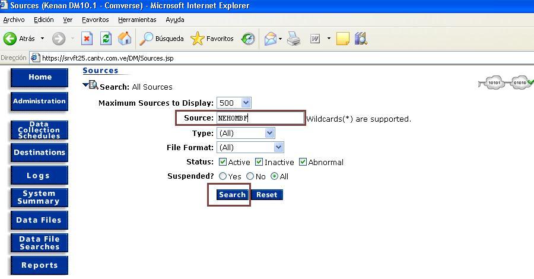
A.6) En el campo Sources según el analista de prueba puede solicitar 2 casos 1. NEMOMBH 2. NECANBF,
en el ejemplo que acontinuación se describe utilizaremos NEMOMBF, los pasos siguientes las selecciones son identicas:
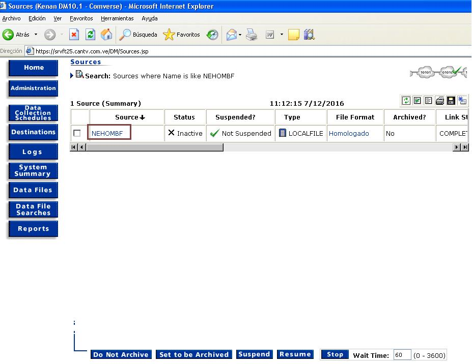 A.7) Seleccionar el campo Data Collection Controls
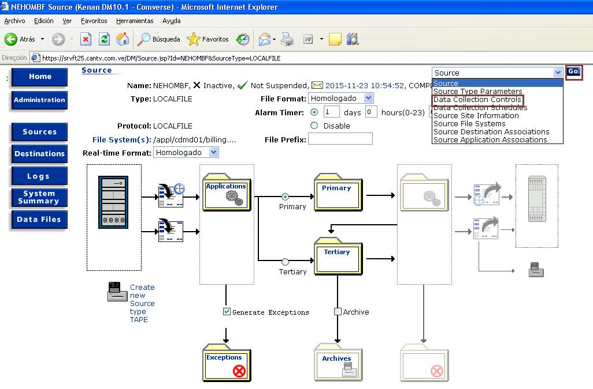
A.8) Seleccionar el campo Start
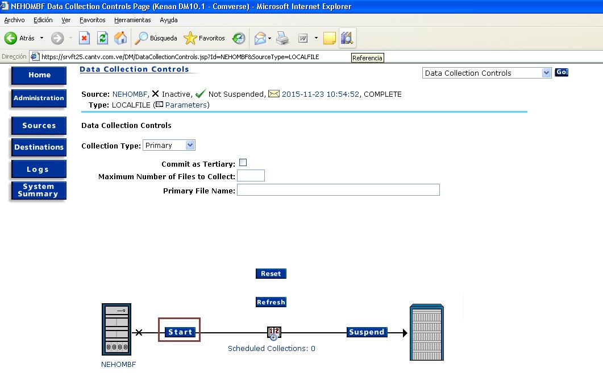
A.9) Seleccionar el campo Destinations
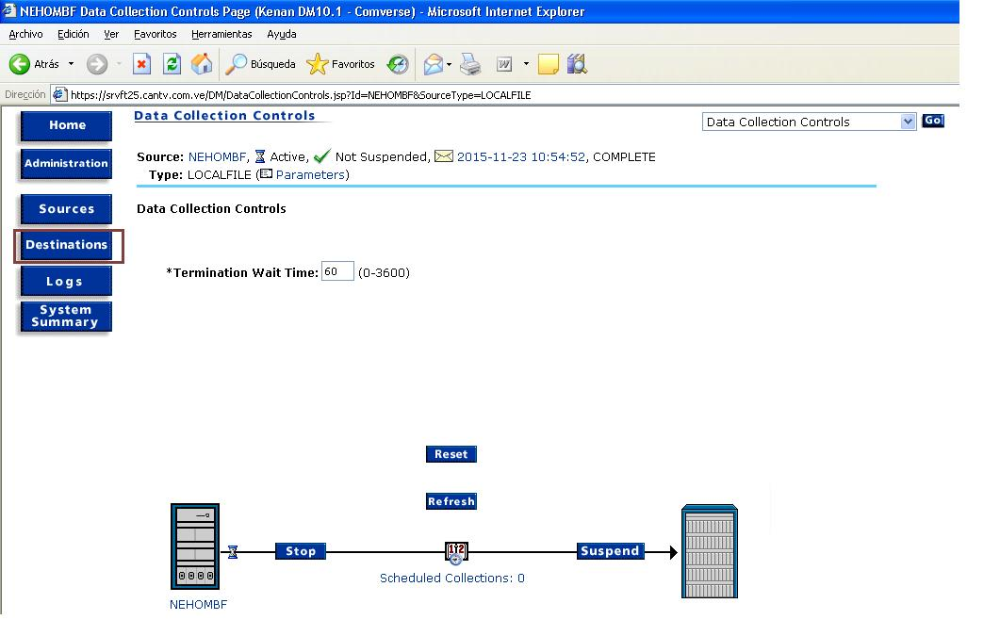
A.10) Dar click en BHOMKENBF
Para este caso se elije la opción BHOMKENBF, ya que se inicio en este ejemplo con NEHOMBF
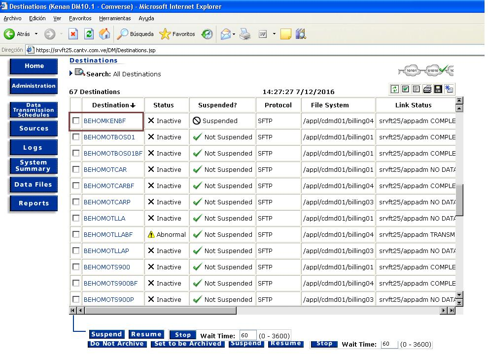 NOTA Si el analista de prueba indica que se cargue para NECANBF opción BECANKENBF
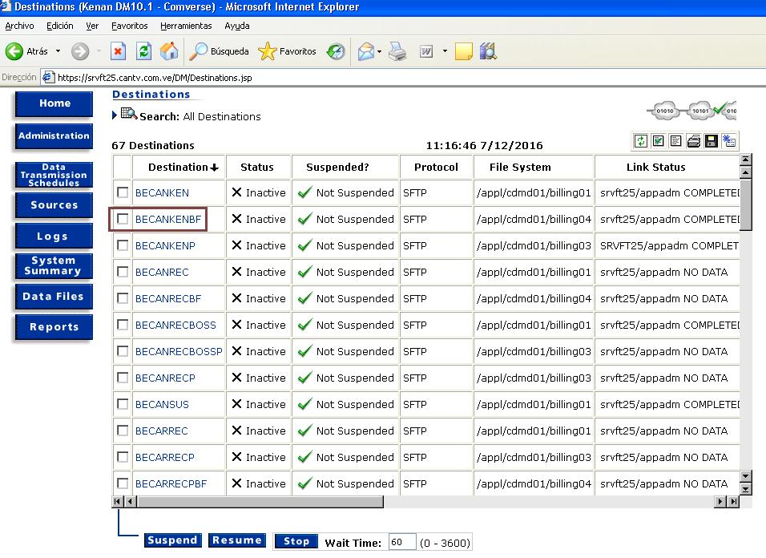
A.11) Seleccionar Data Transmition Control
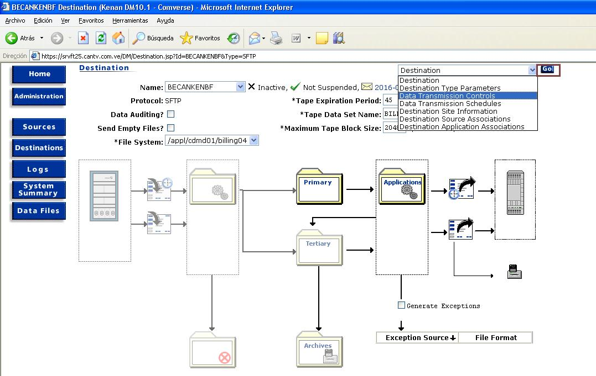
A.12) Seleccionar Start
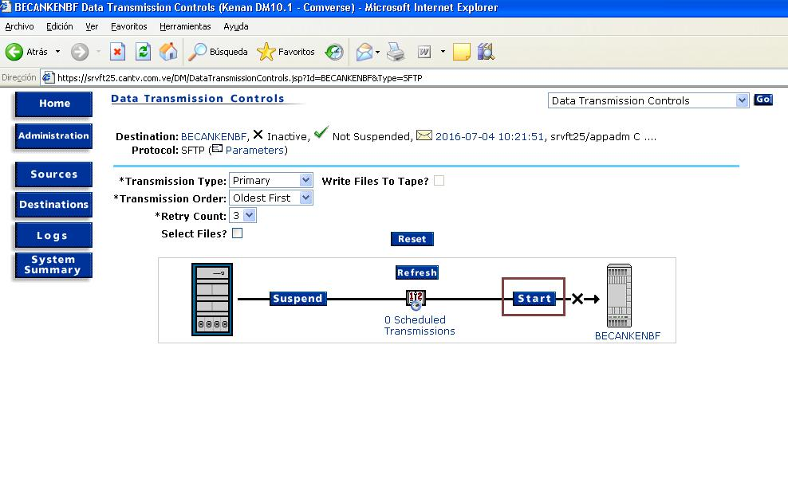
A.13) Se mostrara un reloj de arena, cuando este desaparesca, el proceso culmino
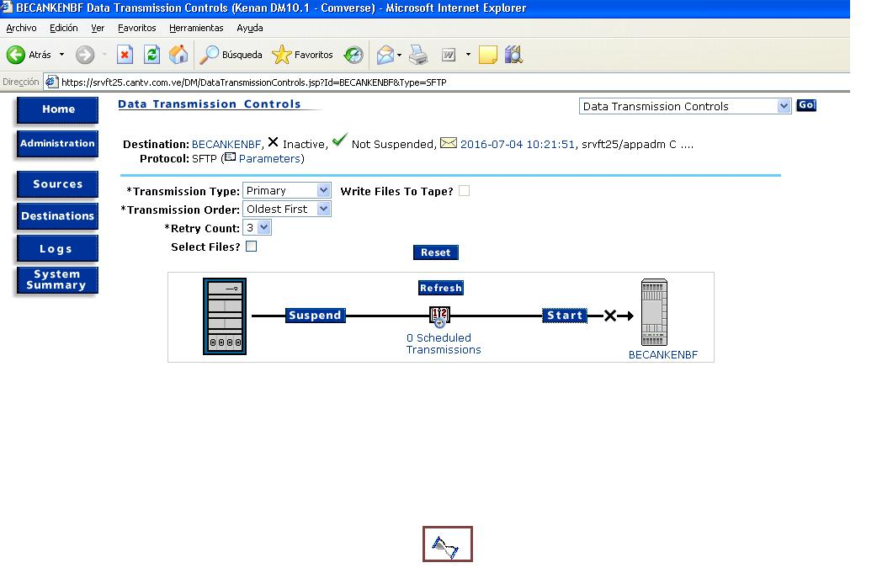
A.14) Se generará un archivo en el servidor SRVFT25 llamado Homologado:
Mainframe, ejemplo: HOM_0000_BsF_TODO_CDM_C128826_20140812_132432.TXT
Archivo txt, ejemplo: HOM_0000_CCR_SBOS_CDM_0469_20141030_100155-1.txt
Para ambos casos la ruta donde se generarán los archivos homologados es la siguiente:
/appl/cdmd01/billing04/BEKenanPruebasBF/
B) Un archivo tipo txt.
B.1) Para este caso se utilizo el CORE-FTP para colocar el archivo txt, ejemplo:
CCR_SBOS_CDM_0469_20141030_100155-1.txt en el SRVFT25/user:ctmpru
se colocará el archivo como lo indique el analista de prueba en la ruta: /appl/cdmd01/billing04/NEHOMBFData/OUT/ para el caso NEHOMBF
/appl/cdmd01/billing04/NECANBFData/OUT/ para el caso NECANBF
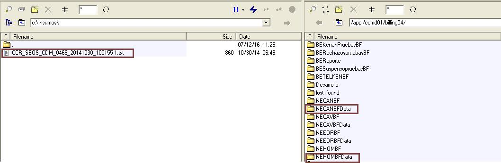
B2) Para este caso se uso Ultaredit-32 para ver el achivo CCR_SBOS_CDM_0469_20141030_100155-1.txt, como se muestra
en la gráfica el último campo debe de tener el simbolo ¶, si no lo tiene lleve el cursor hasta el final
de la linea donde falte y porceda a dar Enter, el simbolo aparecerá
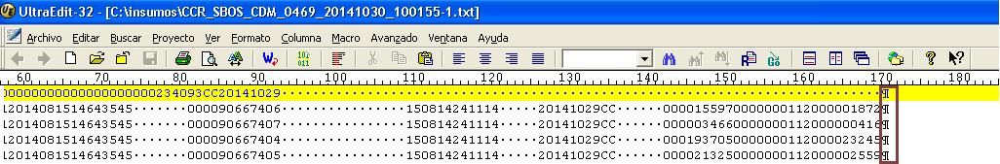
B.3) Al salvar el arreglo se debe de convertir el archivo txt de formato DOS a UNIX y eso se hace a travez
de una opción del producto Ultraedit-32 como se muestra en la gráfica:
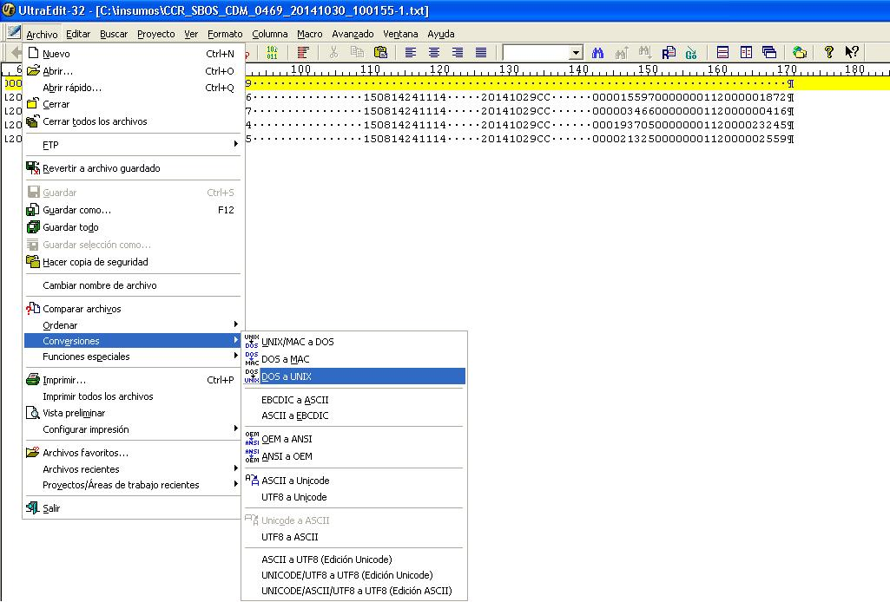
B.4) Finalizado el punto B.3, al salir de Ultraedit-32, este dejará una copia .bk, elimine este archivo
y utilice el original.
B.5) Una vez colocado los archivo tipo txt, realizar los pasos del A.3 hasta el A.13 ya que para ambos casos es el mismo procedimiento.
C) Finalizados los puntos A y B procesar cmcinsu, en el servidor SRVFT51.
C.1) Colocar archivo homologado en el servidor SRVFT51 en la ruta: /appl/kbpp01/data/CDM/
C.2) Entrar al servidor SRVFT51/User:ctmft y procesar el cmcinsu
D) El proceso cmcinsu, genera 3 archivos, deben anexarse a la solicitud del analista de pruebas, fin del proceso.
D.1) Finalizdo el proceso cmcinsu, generará 3 archivos:
Observe que los tres archivos possen en el segundo calificador la fecha AAMMDD y el tercero la hora HHMMSS, esto
garantiza que son los correctos a la hora de enviarlos al analista de pruebas.
D.2) Los archivos generados estarán en el SRVFT25 en la ruta:
/appl/kbpp01/u01/data/reports/ctrl/
D.3) Archivos generados que serán enviados al analista de pruebas:
MCAP20-160709-122451-02-17270.rpt
CAP20-160709-122515-05-17372.rpt
COM20-160709-122448-02-17240.rpt
Y el homologado,tanto el generado en Mainframe como el tipo txt estarán en la siguiente ruta: /appl/cdmd01/billing04/BEKenanPruebasBF/
HOM_0000_BsF_TODO_CDM_C128826_20140812_132432.TXT
Si la solicitud fue la de txt, enviar el homologado, estará en la siguiente ruta: /appl/cdmd01/billing04/BEKenanPruebasBF/
HOM_0000_CCR_SBOS_CDM_0469_20141030_100155-1.txt